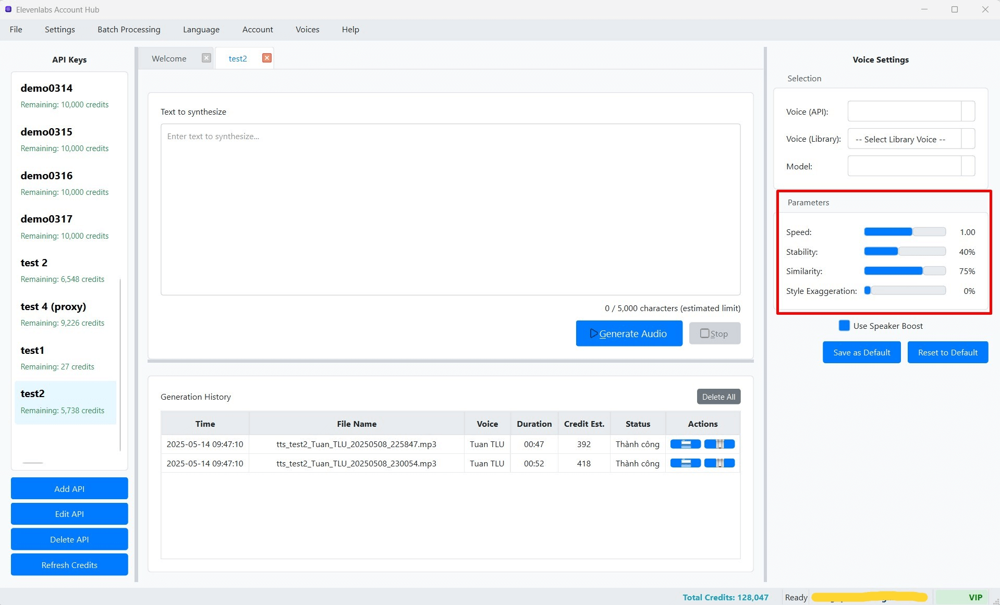

Tùy chỉnh Tham số Text-to-Speech (TTS)
Bảng Cài đặt (Settings Panel) ở Cột Phải của giao diện chính là nơi bạn có thể tinh chỉnh các tham số khác nhau để kiểm soát chất lượng, phong cách và các đặc điểm khác của giọng nói được tạo ra. Các cài đặt này sẽ áp dụng cho tab TTS đang hoạt động và Khóa API tương ứng.
 (Hình ảnh: Bảng Cài đặt TTS với các thanh trượt và tùy chọn được đánh dấu)Các Tham số Chính (Điều chỉnh bằng Thanh trượt)
Các tham số sau đây có thể được điều chỉnh bằng cách kéo các thanh trượt (sliders). Bên cạnh mỗi thanh trượt là một nhãn hiển thị giá trị số hiện tại của tham số đó.
-
Tốc độ (Speed):
- Mô tả: Điều chỉnh tốc độ đọc của giọng nói được tạo ra. Giá trị thấp hơn sẽ làm cho giọng nói chậm hơn, trong khi giá trị cao hơn sẽ làm cho giọng nói nhanh hơn.
- Phạm vi: Thường từ 0.70 (70% tốc độ bình thường) đến 1.20 (120% tốc độ bình thường).
- Mặc định của phần mềm: 1.00 (tốc độ bình thường).
- Cách dùng: Kéo thanh trượt sang trái để giảm tốc độ, sang phải để tăng tốc độ. Giá trị hiển thị là tỷ lệ (ví dụ: 1.05).
-
Độ ổn định (Stability):
- Mô tả: Tham số này kiểm soát mức độ ổn định và tính nhất quán của giọng nói.
- Giá trị thấp hơn (ví dụ: 0% - 50%) có thể tạo ra giọng nói đa dạng hơn, biểu cảm hơn, nhưng đôi khi có thể kém tự nhiên hoặc có những biến đổi không mong muốn (ví dụ: "vỡ" giọng ở một số từ).
- Giá trị cao hơn (ví dụ: 75% - 100%) tạo ra giọng nói ổn định hơn, dễ đoán hơn, nhưng có thể nghe hơi đơn điệu hoặc thiếu sự tự nhiên trong ngữ điệu.
- Phạm vi: 0% đến 100%.
- Mặc định của phần mềm: Thường khoảng 75%.
- Cách dùng: Kéo thanh trượt để điều chỉnh. Giá trị hiển thị là phần trăm (ví dụ: 75%).
- Mô tả: Tham số này kiểm soát mức độ ổn định và tính nhất quán của giọng nói.
-
Độ tương đồng (Similarity Boost / Clarity + Similarity Enhancement):
- Mô tả: Tham số này (đôi khi được ElevenLabs gọi là "Clarity + Similarity Enhancement") giúp tăng cường mức độ tương đồng của giọng nói được tạo ra so với giọng nói gốc được chọn (đặc biệt quan trọng khi sử dụng giọng nói nhân bản hoặc các giọng nói có đặc trưng riêng biệt). Giá trị cao hơn làm cho giọng nói được tạo ra giống với đặc điểm của giọng nói mẫu hơn, đồng thời có thể cải thiện độ rõ ràng.
- Phạm vi: 0% đến 100%.
- Mặc định của phần mềm: Thường khoảng 90%.
- Cách dùng: Kéo thanh trượt. Giá trị hiển thị là phần trăm (ví dụ: 90%).
-
Kiểu cách/Cường độ (Style / Intensity / Style Exaggeration):
- Mô tả: Tham số này cho phép bạn tăng cường hoặc giảm bớt các đặc điểm phong cách của giọng nói được chọn. Giá trị cao hơn có thể làm cho giọng nói trở nên cường điệu hơn, nhấn mạnh hơn vào các đặc điểm phong cách (ví dụ: giọng kể chuyện, giọng quảng cáo, giọng hoạt hình). Sử dụng một cách cẩn thận vì giá trị quá cao có thể làm giọng nói trở nên không tự nhiên.
- Phạm vi: 0% đến 100%.
- Mặc định của phần mềm: Thường là 0% hoặc một giá trị thấp.
- Cách dùng: Kéo thanh trượt. Giá trị hiển thị là phần trăm (ví dụ: 0%).
Khi bạn kéo các thanh trượt, giá trị số tương ứng sẽ được cập nhật ngay lập tức bên cạnh để bạn dễ dàng theo dõi và tinh chỉnh.
Tùy chọn Bổ sung (Checkboxes)
-
Sử dụng Speaker Boost (Use Speaker Boost):
- Mô tả: Đây là một tùy chọn của ElevenLabs nhằm cải thiện chất lượng âm thanh tổng thể và độ rõ ràng của giọng nói được tạo ra. Tính năng này đặc biệt hiệu quả với các giọng nói được thiết kế để hoạt động tốt với nó.
- Cách dùng: Đánh dấu (check) vào ô "Use Speaker Boost" để bật tính năng này. Bỏ đánh dấu để tắt.
- Mặc định của phần mềm: Có thể là Tắt (False) hoặc Bật (True) tùy theo cấu hình mặc định ban đầu của phần mềm hoặc hồ sơ cài đặt đã lưu cho Khóa API.
-
Sử dụng Proxy Pool (Use Proxy Pool):
- Mô tả: Cho phép yêu cầu tạo TTS hiện tại sử dụng một proxy từ Proxy Pool Chung đã được bạn thiết lập, thay vì sử dụng proxy riêng (nếu có) đã được cấu hình cho Khóa API đang hoạt động.
- Cách dùng: Đánh dấu (check) vào ô "Use Proxy Pool" để bật. Bỏ đánh dấu để sử dụng cài đặt proxy mặc định của Khóa API (nếu có).
- Mặc định của phần mềm: Tắt (False).
Lưu ý khi Tùy chỉnh Tham số
- Thử nghiệm là Chìa khóa: Cách tốt nhất để hiểu rõ tác động của từng tham số là thử nghiệm với các giá trị khác nhau cho cùng một đoạn văn bản và nghe kỹ kết quả. Mỗi giọng nói và mô hình có thể phản ứng khác nhau với cùng một cài đặt.
- Tìm Sự Cân bằng: Việc tìm ra sự cân bằng phù hợp giữa các tham số là rất quan trọng. Ví dụ, "Độ ổn định" quá thấp có thể làm giọng nói không tự nhiên hoặc bị lỗi, trong khi quá cao có thể làm mất đi sự biểu cảm và ngữ điệu tự nhiên. Tương tự, "Độ tương đồng" quá cao đôi khi có thể làm giọng nói bị "méo" nếu mẫu gốc không hoàn hảo.
- Lưu Hồ sơ Cài đặt: Sau khi bạn đã tìm thấy một bộ cài đặt ưng ý cho một giọng nói hoặc một mục đích sử dụng cụ thể với một Khóa API, đừng quên sử dụng nút "Save Settings" để Lưu Hồ sơ Cài đặt cho Khóa API đó. Điều này giúp bạn dễ dàng áp dụng lại các cài đặt đó trong tương lai.
- Reset về Hồ sơ: Nếu bạn muốn quay lại các cài đặt đã lưu trước đó cho Khóa API hiện tại, hãy sử dụng nút "Reset Settings".
Bằng cách thử nghiệm và tinh chỉnh các tham số này, bạn có thể tạo ra những đoạn âm thanh với chất lượng và phong cách phù hợp nhất với nhu cầu của mình.